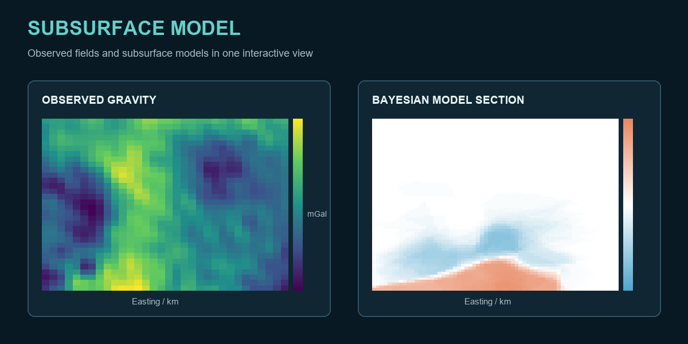

About
Making complex places easier to understand
I am a machine learning scientist with a Ph.D. in Geomatics Engineering from the University of Calgary. I work with maps, photos, and 3D surveys to make hard-to-see patterns easier to explore and use.
My projects include turning a route into a 3D flyover video, finding infrastructure in large image collections, and presenting possible underground structures in an interactive model.
Behind these experiences are careful data processing, computer vision, and uncertainty-aware modeling. The project stories below show what each tool is for and how it works.

Choose a route and see it become a 3D flyover video, built from terrain and imagery through an automated cloud workflow.

Models outline poles, wires, and other assets in large image collections so people can review infrastructure more efficiently.

Reliable workflows prepare large map and 3D survey datasets, run models, and deliver results that teams can use.

Compare surface measurements with interactive 3D interpretations of the ground below, and see where the models are less certain.
More Work
Research and experiments
More ways I have used images, maps, geometry, and automation to understand the world.

Comparing ways to classify the millions of 3D points collected by LiDAR surveys, including deep learning and simpler baselines.

Dividing a complex space into meaningful regions at several scales, from broad zones to local details.

Letting a model change its own complexity as it searches for shapes and patterns hidden in data.

Finding the outline of an irregular shape from scattered points when a simple boundary would miss important detail.
Using gravity and magnetic signals to estimate underground structure while showing how uncertain those estimates are.

Finding and outlining individual objects in infrastructure images, such as assets that would be slow to mark by hand.

Following movement between images, from video frames to changing patterns in satellite views of the sea.

Sorting large 3D survey datasets into useful categories using geometric clues and an efficient machine learning workflow.

Automating repeated browser tasks and dealing with dynamic pages, pop-ups, and changing content.
Experience
Selected Roles
Lead Geospatial AI Engineer | Spatial Data Analytics Inc. | Jul 2026 - Present
I lead geospatial AI, computer vision, and GIS solution development across LiDAR, imagery, 3D vector data, automation, and cloud-based processing workflows. My work also includes coordinating engineering and R&D delivery plans, defining AI automation workflows, and establishing technical documentation and data-processing standards.
Innovation Developer | Spatial Data Analytics Inc. | May 2022 - Jun 2026
I built production ML pipelines for image segmentation, object detection, and LiDAR / point-cloud workflows on large geospatial datasets. This included agentic model-evaluation and PDF reporting workflows, GeoPandas and Shapely-based benchmarking systems, and scalable PDAL and laspy pipelines for LAS/LAZ processing.
Applied Research Scientist | University of Calgary | Feb 2022 - Jan 2023
I focused on applied geospatial and geophysical modeling, combining machine learning, Bayesian inference, and deterministic methods for subsurface interpretation. I also led Python-based analysis and uncertainty-aware workflows supporting geothermal target discovery.
Lead Innovation Developer | Flyover Map 3D | Sep 2020 - Feb 2022
I worked on a geospatial platform that generated 3D interactive maps and flyover visualizations from user-defined routes. The platform used Cloud Run, Google Cloud Storage, Firestore, FastAPI, and Docker for orchestration, delivery, monitoring, and large-scale DEM and RGB preprocessing.
Geospatial Developer | University of Calgary | Sep 2017 - Dec 2021
I developed Bayesian and machine-learning workflows for inverse problems, anomaly detection, uncertainty estimation, and spatial-data analysis. I also built geospatial and geophysical Python pipelines for subsurface modeling and delivered 3D earth models for external clients, including ADNOC.
Programming and Tools
- Python, C++, Cython, Julia, R, JavaScript
- FastAPI, Docker, Google Cloud, AWS, CUDA
- Git, Jupyter, LaTeX, parallel computing, MPI
ML and Computer Vision
- PyTorch, TensorFlow, Keras, Scikit-learn, Detectron2, SAM
- EfficientNetV2, DenseNet, MobileNetV2, Mask R-CNN, PointRend, Panoptic-DeepLab
- Semantic segmentation, object detection, anomaly detection, experiment design, benchmarking
Geospatial and 3D Data
- LiDAR point clouds, PointCONV workflows, feature engineering
- PDAL, GDAL/OGR, GeoPandas, Rasterio, PostGIS, Earth Engine
- Geospatial preprocessing, reprojection, mesh generation, scalable inference
The production frameworks I work with span TensorFlow/Keras segmentation pipelines, Detectron2-based instance segmentation and detection, and 3D point-cloud classification workflows ranging from feature-engineered random forests to PointNet++ and PointCONV benchmarking.
Awards
Scholarships and Recognition
- Alberta Graduate Excellence Scholarship, 2021
- Alberta Graduate Excellence Scholarship, 2019
- Helmut Moritz Graduate Scholarship, 2019
- External Awards: Miscellaneous, 2019
- 3rd Place at the Geomathon Competition, 2019
- Teaching Award, 2018

These awards reflect academic performance, research contribution, and teaching excellence during my graduate studies in Geomatics Engineering.